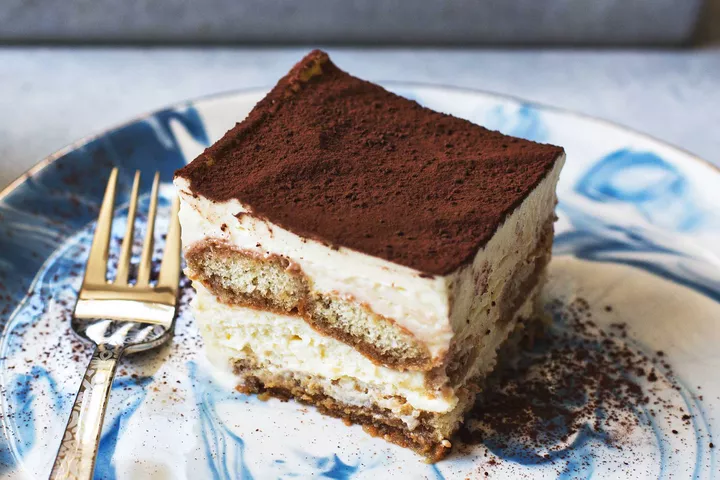

Tiramisu

I've always thought of tiramisu as a "restaurant dessert." You know – one of those fancy desserts that you would never think to make at home.
It turns out that making a good tiramisu at home isn't really all that difficult. It really just requires a little patience, some solid whisking, and a few tips to help you along!
List of Ingredients:
- 6 large egg yolks
- 1 cup (200g) sugar, divided
- 3 ounces (6 tablespoons) dark rum, divided
- 1 1/2 cups (12 ounces) mascarpone cheese, cold from the fridge
- 1 cup heavy cream, cold from the fridge
- 1 cup boiling water
- 1 tablespoon instant espresso powder
- 1 (7-ounce) package ladyfingers
- Unsweetened cocoa powder (not Dutch-processed) for dusting the top
Method:
- Prep the dish
- Whisk the yolks and sugar to make the zabaglione
- Add in the rum
- Whip the mascarpone and cream
- Mix the whipped cream and the zabaglione
- Make the coffee dipping liquid for the ladyfingers
- Assemble the tiramisu
- Chill the tiramisu
- Serve